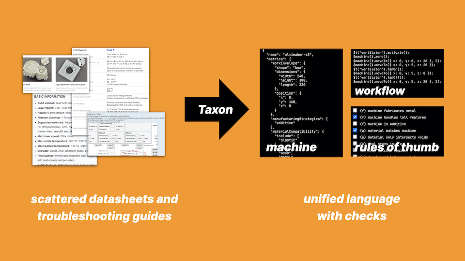
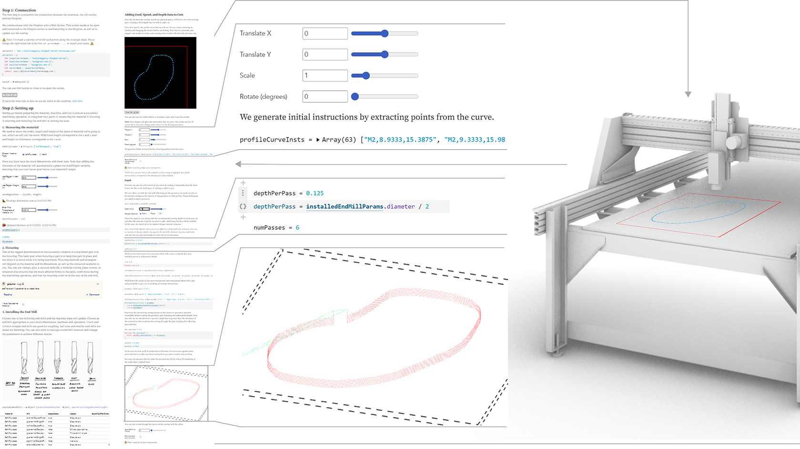
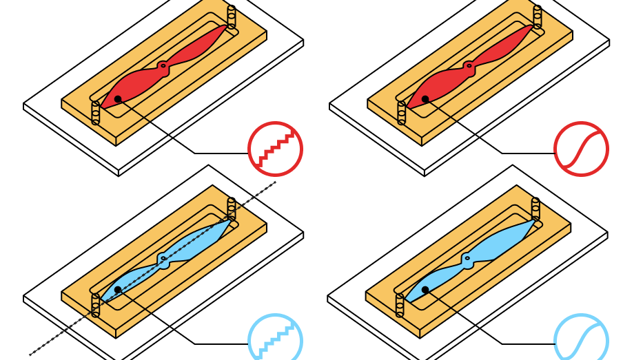

I am on the job market for postdoc and industry research positions starting in 2024.
I study how innovating with programmable digital fabrication machines can feel more like actually programming—not just running code.
Machines like 3D printers, CNC mills, and laboratory automation tools have enabled new advances in science, art, and engineering, but remain difficult to program beyond common-case tasks.
In particular, I focus on exploratory digital fabrication, where practitioners are pushing the boundaries of machine capabilities to investigate unexplored manufacturing possibilities.
To better support exploratory fabrication, I prototype novel software tools drawing on ideas from computational notebooks, programming languages, and data visualization.
Selected Projects

Programming Language Foundations for Reasoning with Digital Fabrication Machines

Computational Notebook Tools for Manufacturing Robot Control

Coordinating Disparate Physical and Digital Steps in a Single Programming Environment
More info TBA